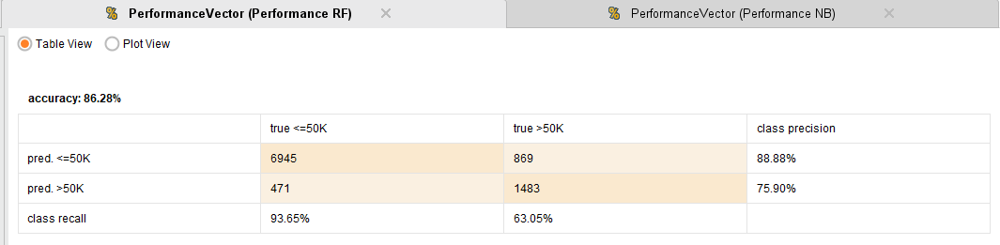

Evaluacion de modelos: Adult income dataset

El Census Bureau de EEUU realizó un censo en 1994 de una porción variada de la población adulta donde se especifican factores socioeconómicos de la persona y sus ingresos anuales. Como objetivo de este análisis es utilizar esos datos y lograr predecir, dada una nueva persona X, si su ingreso anual sería mayor o menor a 50000 dólares (Que ajustado por inflación, serían unos 93,000 dólares, un buen sueldo). Integraremos el uso de curvas ROC en este análisis para comparar modelos.
Dataset
El dataset está conformado por 32561 filas y 15 columnas (siendo una la salida del modelo).
- age: Edad de la persona.
- workclass: Sector privado, Trabajo para el gobierno estatal, trabajo para el govierno federal o independiente.
- fnlwgt: Final weight, un índice creado para representar las características socioeconómicas de las personas para decidir su selección en el censo.
- education: Último grado de educación (No graduado, Graduado de escuela media, bachiller, universitario, doctorado, master, etc).
- education.num: Años de estudio aprobados.
- marital.status: Estado civil (divorciado, separado, casado, nunca casado, viudo).
- occupation: Ocupación, trabajo.
- relationship: Sin familia actualmente, no casado, esposo, esposa, tiene un hijo.
- race: Raza (negro, blanco, asiático).
- sex: Sexo (masculino, femenino).
- capital.gain: Ganancia capital.
- capital.loss: Pérdida capital.
- hours.per.week: Horas trabajadas a la semana.
- native.country: País de nacimiento.
- income: Ingreso anual (Dos valores, < 50000 y >= 50000).
Analisis
Este análisis va a ser realizado utilizando la herramienta rapidminer ya que es sencilla y este dataset en particular no necesita tantas transformaciones.
Preparación de datos
Cargamos los datos en Rapidminer y en principio, eliminaremos "education" ya que este y "education.num" dicen lo mismo de los datos pero uno de ellos lo dice con una variable continua, la cual nos sirve como cuantificación. Además, eliminaremos "relationship" ya que sus valores representan lo mismo que "marital.status". Esto se realizará con un bloque "Select Attributes".
A continuación, aplicamos un bloque "Replace missing values" para reemplazar todo dato faltante con la media de los datos. Por último, agregamos un bloque "Set role" donde marcamos como salida del modelo (label) al atributo "income".
Modelado
Como se especificó anteriormente, en este análisis buscamos ver cual modelo utilizado tendrá un mejor rendimiento sobre el conjunto de datos utilizado, es por ello que realizaremos el entrenamiento utilizando un bloque "Compare ROC's" que nos permite entrenar y comparar nuestros datos con varios algoritmos.
Utilizaremos Naive bayes, random forest (1000 árboles, maxima profundidad) y Regresión logística.
Asimismo, previo al bloque "Compare ROC's", usaremos un "multiply" y haremos 3 bloques validation, uno para cada uno de los modelos y bloques de Performance binomial con "AUC" , "precision" y "recall" marcados.
Modelo
Performance logistic regression
Performance Naive Bayes
Performance Random Forest

Curva ROC entre los 3 modelos
Puntuaciones AUC:
- Logistic regression: 0.907
- Naive Bayes: 0.884
- Random Forest: 0.912
Observaciones
A la hora de comparar modelos, la accuracy del modelo no es un indicador
suficiente de que tan performante fue. Es de ahí que surge el uso de las
Curvas ROC. Estas se basan en la graficación de la comparativa entre
verdaderos positivos y falsos positivos en cada punto de la curva, lo
cual nos da una imagen viva de como el modelo se maneja clasificando a
medida que avanza.
En particular, se puede apreciar como Naive Bayes, tiene una alta
accuracy (80,69%) comparado con el resto de los modelos. Aun asi, en la
gráfica ROC se ve claramente que su rendimiento es mucho peor, ¿Por qué
ocurre esto?. Si bien su accuracy es muy buena, vemos que el recall para
la clase de ingresos mayores a 50k, es de un 35.12%, lo cual es muy
bajo. Esto indica una cantidad enorme de falsos positivos, dato no menor
en problemas de clasificación binomial. Esto demuestra la importancia de
ver todos estos indicadores ya que a simple vista parece que tenemos un
modelo exitoso cuando no es así ni por asomo.
Finalmente, la Regresión logística y Random forest se comportan muy parecidos con estos datos, siendo el mejor de ambos Random Forest con mayor recall y precisión en todos los casos, indicando una mayor tasa de verdaderos positivos y de verdaderos negativos. En la gráfica ROC, sus curvas se ven bastante parecidas, indicando lo analizado anteriormente y su área debajo de la curva (AUC) también es muy parecida (0.907 para regresión y 0.912 para Random forest).
Conclusión
Se demuestra el uso de indicadores alternativos para medir la performance de los modelos, se explica el funcionamiento de las matrices de confusión (matriz de performance) y de las gráficas ROC y su interpretación.